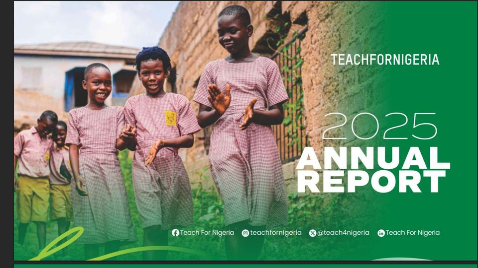
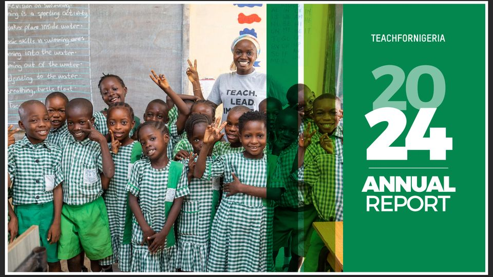

Publications
Annual reports, 2024 and 2025
47 pages, two editions, led from data collection to design.
The brief
Each year Teach For Nigeria publishes an annual report for donors, partners and government. It gathers results and stories from every department into one document.
What I did
- Led production of both editions from start to finish as Marketing and Communications Coordinator.
- Collated data and stories from departments across the organisation.
- Managed several rounds of editing, proofreading and design.
- Delivered the 2025 report to the CEO for approval on 31 March 2026; it was published in May 2026.
- Published the report on the website and all social media platforms.
Read the 2025 Annual Report (PDF) Read the 2024 Annual Report (PDF)

